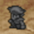

Dopo aver subito certi tipi di attacchi, i tuoi personaggi possono incorrere negli status alterati descritti di seguito. Cerca di curarli il prima possibile usando oggetti o magie. Alcuni status alterati svaniscono automaticamente al termine della battaglia.
Status alterati che svaniscono dopo la battaglia
 |
Sleep
(Morfeo) |
Il personaggio si addormenta e non può agire. |
Cura: Esuna (Esna) (Magia bianca), Alarm Clock (Sveglia) (oggetto)
|
 |
Paralyze
(Paralisi) |
Il personaggio viene paralizzato e non può agire. |
Cura: Esuna (Esna) (Magia bianca), Unicorn Horn (Corno di unicorno) (oggetto)
|
 |
Confuse
(Caos) |
Il personaggio attacca casualmente nemici e alleati; non puoi assegnargli comandi di battaglia. |
Cura: Esuna (Esna) (Magia bianca), subisce un attacco |
 |
Curse
(Maledizione) |
Dimezza i valori di attacco e difesa. |
Cura: Esuna (Esna) (Magia bianca), Cross (Croce) (oggetto)
|
Status alterati che persistono dopo la battaglia
 |
 |
Poison
(Veleno) |
Riduce gradualmente gli HP. |
Cura: Esuna (Esna) (Magia bianca), Antidote (Antidoto) (oggetto)
|
 |
 |
Darkness
(Tenebre) |
Riduce la precisione degli attacchi fisici. |
Cura: Esuna (Esna) (Magia bianca), Eye Drops (Collirio) (oggetto)
|
 |
 |
Silence
(Silenzio) |
Impedisce di lanciare qualsiasi magia tranne "Pig" (Porcello). |
Cura: Esuna (Esna) (Magia bianca), Echo Herbs (Erba dell'eco) (oggetto)
|
|
 |
Pig
(Porcello) |
Impedisce di lanciare magie. |
Cura: Pig (Porcello) (Magia nera) o Esuna (Esna) (Magia bianca), Diet Ration (Cibo dietetico) (oggetto)
|
 |
|
Toad
(Rospo) |
Riduce i valori di attacco e difesa; impedisce di lanciare qualsiasi magia tranne "Toad" (Rospo). |
Cura: Toad (Rospo) (Magia nera) o Esuna (Esna) (Magia bianca), Maiden's Kiss (Bacio di pulzella) (oggetto)
|
 |
 |
Mini |
Riduce i valori di attacco e difesa. |
Cura: Mini o Esuna (Esna) (Magia bianca), Mallet (Mazzuolo) (oggetto)
|
|  |
 |
Petrify
(Pietrosi) |
Il personaggio viene pietrificato e non può agire. |
Cura: Esuna (Esna) (Magia bianca), Gold Needle (Ago dorato) (oggetto)
|
 |
KO |
Si verifica quando gli HP scendono a 0. |
Cura: Raise (Rinascita) (Magia bianca), Phoenix Down (Coda di fenice) (oggetto)
|